Projects
Open a project for methods, results, figures, and documents. Current doctoral work is on the research page.
Research projects
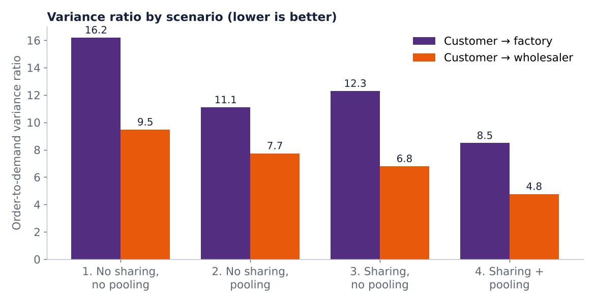
Agent-Based Simulation of the Bullwhip Effect
An AnyLogic model of a three-echelon supply chain with two retailers. Combining information sharing with risk pooling cut order-to-demand variance by 46.3% at the factory and 49.3% at the wholesaler, and the benefit grew with lead time.
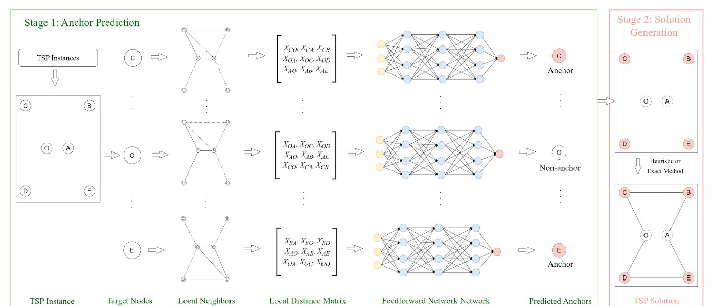
Learning-Based Optimization for the Traveling Salesman Problem
A neural network predicts “anchor” nodes from local distance features, then exact and heuristic solvers build the tour. Against a graph pointer network on 1,000-node instances: 28% smaller average optimality gap and 59% less computation time.
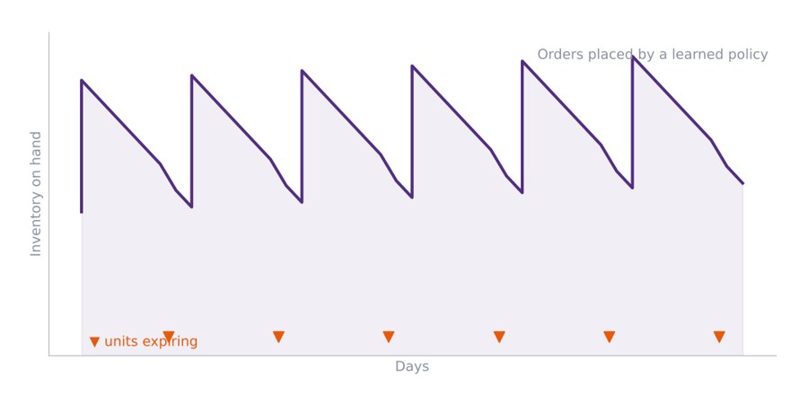
Deep Reinforcement Learning for Perishable Inventory
A Markov decision process for perishable products with an all-unit quantity discount, solved with three deep RL algorithms (DQN, A2C, PPO) and tested under FIFO and LIFO issuing. Presented at IISE 2023.
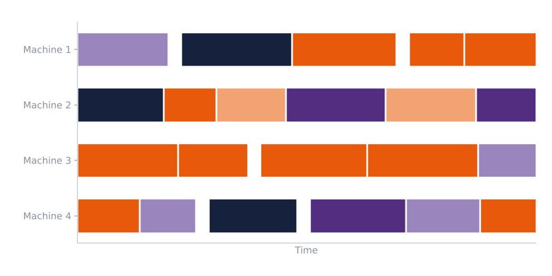
Production Scheduling for Plastic Injection Molding
A mixed-integer model that schedules molding jobs across dryers and unrelated parallel machines with shared setup resources and machine eligibility, minimizing makespan with a manufacturer's data. Presented at IISE 2023 (with A. Owens and A. J. Yu).
Graduate and industry projects

Predicting Emergency Department Admissions
Predicted admission versus discharge for 347,360 emergency visits from 50 triage variables and 500 chief-complaint text features. Five classifiers compared; CatBoost reached the best ROC-AUC (0.863).
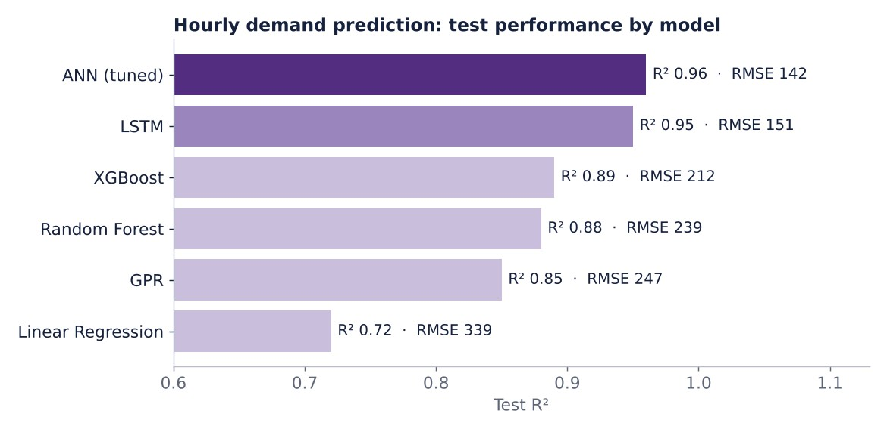
Bike-Sharing Demand Forecasting
Six models forecast hourly bike rentals in Seoul from weather and calendar data. A Ray Tune–tuned neural network reached a test R² of 0.96 (LSTM 0.95, linear regression 0.72), and SHAP showed hour and temperature drive demand.
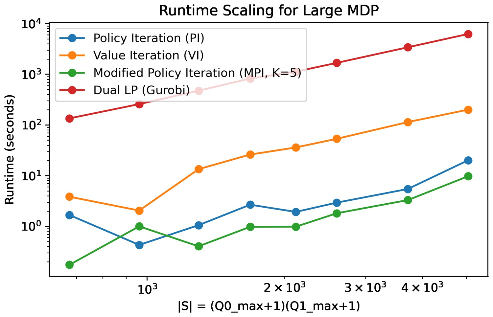
Dynamic Physician Allocation with Markov Decision Processes
A continuous-time MDP for assigning physicians between critical and mild-patient streams, solved by value, policy, and modified policy iteration and an LP. Policy iteration converged in 8–15 steps on up to 5,041 states.
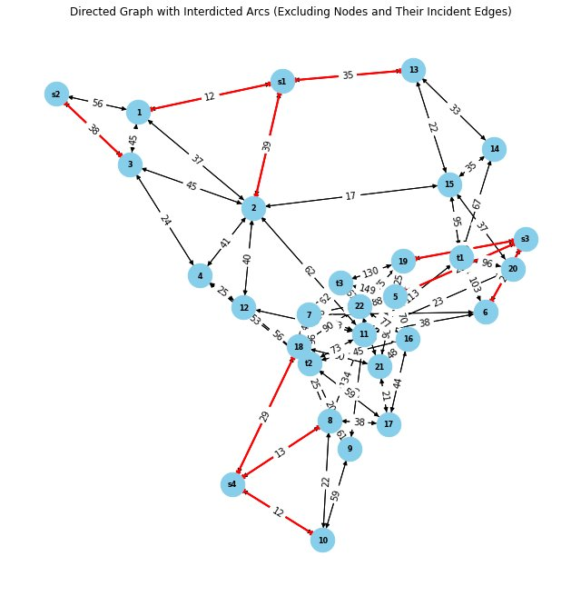
Network Interdiction for Wildlife Trafficking
Bilevel models choose which routes to block, under a budget, to disrupt trafficking of poached tiger parts. Reformulated to single-level models with duality and compared across budgets on a case study based on Bandhavgarh Tiger Reserve.
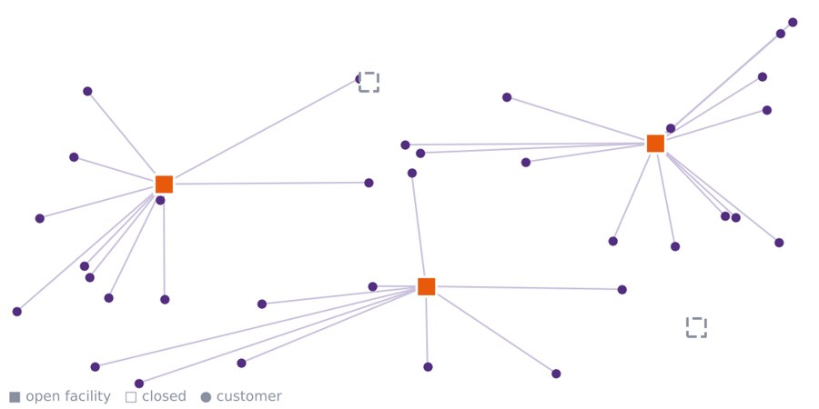
Facility Location with a Custom Branch-and-Bound
A branch-and-bound algorithm written from scratch for uncapacitated facility location in MATLAB with Gurobi, benchmarked against the integer solver and LP relaxation on instances with 10 to 50 facilities.
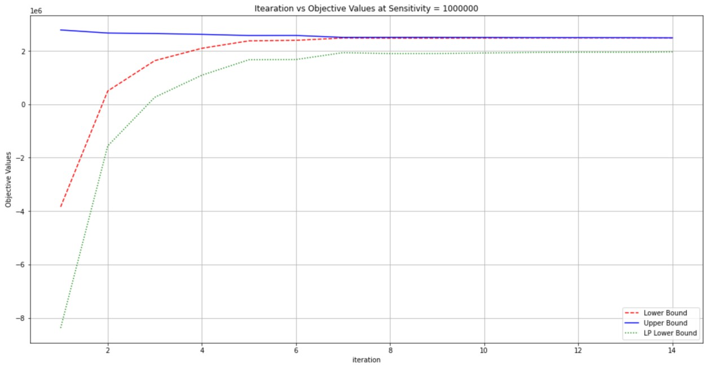
Lagrangian Relaxation with Subgradient Updates
Relaxed hard resource constraints in a scheduling model with Lagrange multipliers updated by a subgradient method over 200 iterations, tracking lower and upper bounds against the LP relaxation.
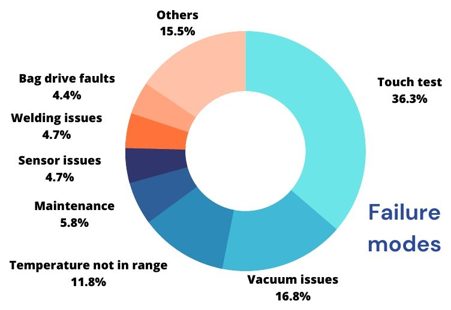
Reducing Production Downtime at Fresenius Medical Care
Analyzed four months of data from two automated dialysis-product lines with about 74% OEE; the touch test and vacuum issues caused over half of downtime. Proposed a failure-reporting system, database, and SOPs.
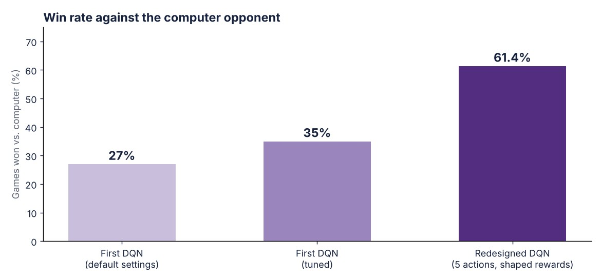
Deep Q-Network Agent for the Board Game Ludo
A Deep Q-Network agent for Ludo. Tuning lifted the first model from 27% to 35% wins; a redesigned five-action network with shaped rewards won 61.4% of games on average across five 1,000-game runs.